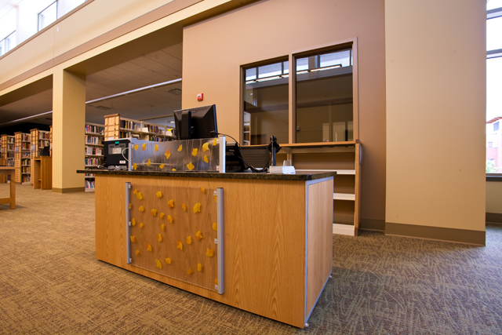
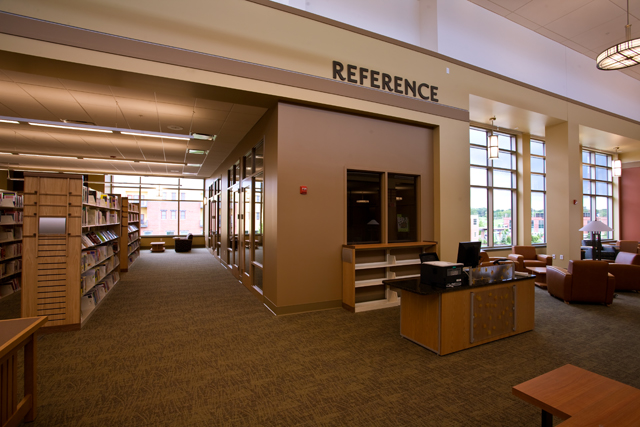

Information Technology Desk
Sponsored by Roger Tesch, in memory of Diana H. Tesch
This work area will be conveniently located near the technology center on the second floor and is a one–stop location for help with technology and library resources.

